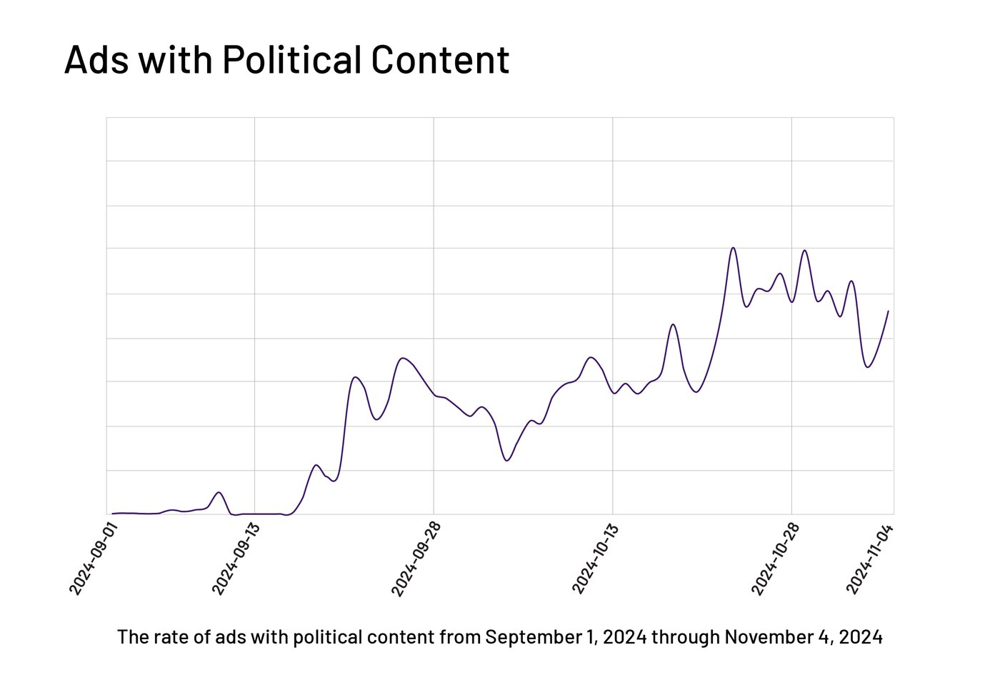
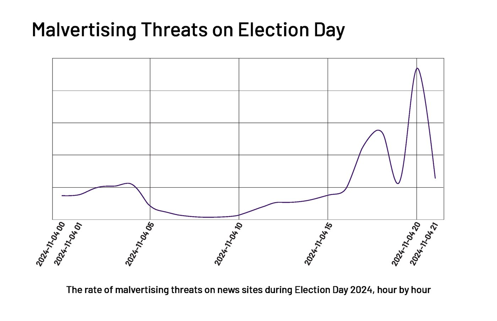
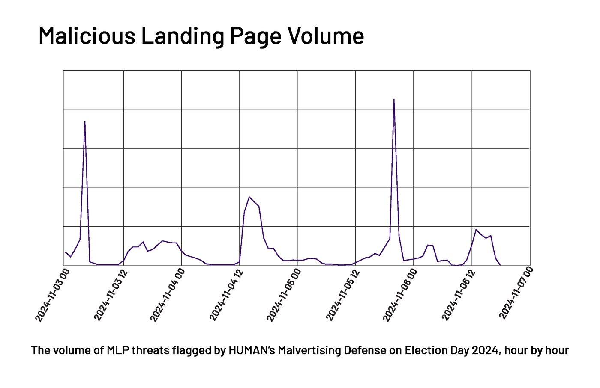
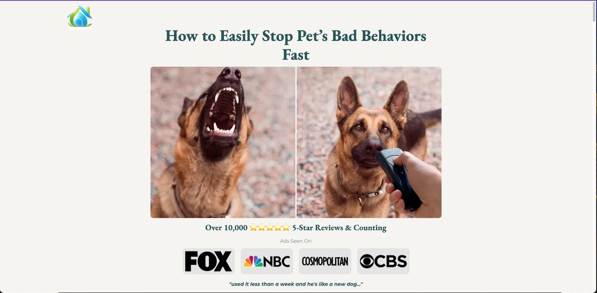
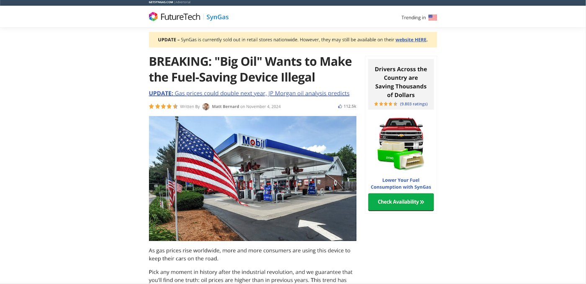

2024’s election cycle featured a surge in digital advertising volumes, creating a prime opportunity for malicious actors. A recent HUMAN analysis of malvertising threat activity revealed a spike in threats and ad quality violations during and associated with the election, underscoring a clear pattern of exploitation during major increases in online activity.
These attacks serve as valuable case studies for understanding how malicious actors capitalize on increased ad spending and user traffic. The patterns we identified—especially targeting news websites during peak consumption hours—offer direct insights into current and future threats. By looking closely at these attack surges, we gain crucial understanding of how malvertisers behave during periods of increased spending and user engagement, strengthening defense strategies and protecting the integrity of the advertising ecosystem.
In the course of this investigation, HUMAN researchers observed:
- A massive surge in political ad spending: This created openings for opportunistic malvertising campaigns, attempting to hide in the sheer volume of advertising leading up to and following the election.
- Malicious landing pages (MLPs): These pages are purpose-built to exploit the increased volume of ads and ensnare users.
- Targeted MLP attacks against major news websites: Knowing that key news websites are crucial channels of public information, threat actors targeted these outlets.
These three interconnected elements provided valuable insight into the present-day and evolving malvertising strategies and reinforce the importance of proactive defense measures.
Running Up the Bill: Election-Related Content Opens Door for Malvertising
Overall political ad spending reached nearly $11 billion during the 2024 election, in part fueling an explosive digital ad surge and shaping the cyber threat landscape during the election season.
HUMAN’s publisher and platform customers, especially those who monetize or publish political content, observed a dramatic increase in overall traffic as the election approached. HUMAN also observed this surge mirrored in the increased volumes of ads that we classified as political for our clients.
HUMAN’s Malvertising Defense identified a 30,000% jump in ads with political content in the two months preceding the election. These ads, which were not malicious, were blocked by publishers that didn’t want politically-themed ads on their websites. The surge illustrates how quickly the prevailing content of ads can shift, and why partners need support to mitigate risks associated with serving ads they don’t want running alongside their content.

Some publishers and platforms choose to block political ads as a matter of policy, but the political ad surge created a chaotic environment with threat actors seeking to exploit the heightened activity. This surge in volume served as a catalyst for the jump in malvertising activity.
Riding the Media Wave: Targeting the News
Recognizing this surge in activity, threat actors focused their attacks on news websites. Both national and local news platforms and publishers felt these targeted attacks with a notable increase in attack volumes, primarily MLP attacks and redirect attacks. Attackers exploited the amplified visibility and high traffic during peak reporting periods.
Researchers observed that threat activity consistently spiked after working hours (EST). This coincided with increased press coverage and online news consumption driven by high election interest. The night of the election itself recorded the most significant spike in this targeted malicious activity.

This targeting aimed to capitalize on the heightened user engagement with news content. By injecting their malicious ad content into these moments of peak news viewership, attackers dramatically increased the likelihood of their attacks hitting their marks and victimizing visitors to the websites. The threat actors effectively “rode the media wave,” using the public’s attention on important election-related news as a vehicle to amplify their own malicious messages and campaigns. The sheer scale of the visitor surge meant a much wider potential spread for these attacks.
The Unseen Malvertising Parade During Inauguration Day
During Inauguration Day activities, the Human Defense Platform flagged a second significant surge in scam ads and malicious landing pages (MLPs). This influx included a marked increase in fraudulent offers, phishing attempts, and deceptive content. The spike in activity corresponded with the number of people online engaging with content surrounding the inauguration. This targeted activity underscores how threat actors take advantage of moments of national and global attention to maximize the reach and potential impact of their attacks.
Malicious Landing Pages: A Case Study in Threat Actor Tactics
Attackers’ tactics didn’t end with disrupting news consumption; they extended to luring users to malicious landing pages. Malicious Landing Pages (MLPs) are a type of attack through which users navigate to deceptive sites by clicking on misleading, attention-grabbing, or clickbait creative images. These were by far the most common category of attack on these news sites. Below is a chart of three prominent MLP attack subtypes as observed by HUMAN and their respective volume trends in the hours leading up to and during election night. These MLP attacks can be broadly described or understood as scams, including Fake Product Phishing Scams, Cost Saving Scams, Fake Quiz Scams, and Tech Support Scams. More below on how these types of scams harm users.

To understand the nature of these malicious pages, let’s examine some specific campaigns that were identified:
Fake Product Phishing Scam (“Barksnomore”): Characteristics of this type of attack include:
- Promotion of a product known to researchers to be of poor quality or never delivered to purchasers.
- Charging customers varying prices, recurring subscriptions, and/or multiple charges - all of which users did not consent to receive.
- Attempting to collect sensitive user information, including bank details and Social Security Numbers, through a "Become Affiliate” section of the site.

Cost Saving Scam (“Getsyngas”): Characteristics of this type of attack include:
- An “advertorial” aesthetic, designed to garner trust by convincing users that the landing page is a legitimate news article.
- Sensationalized headlines and content intended to encourage users to complete a purchase.
- Promoting a product that either never arrives or is largely non-functional on arrival.

Tech Support Scam: Characteristics of this type of attack include:
- Simple creative images (as seen below) that are vague and directly entices site visitors to click.
- Drives users to a site that displays numerous popups and alerts claiming that the user’s device has been compromised with malware or a virus.
- Attempts to lure the user to call the number displayed in a pop-up, where threat actors attempt to extract personal information from the user through social engineering.
Adapt and Defend: Learning From Election Season Threats
The 2024 US election season was a clear demonstration of how threat actors take advantage of moments of intense online engagement to launch and scale sophisticated malvertising campaigns. These election-specific tactics—including targeting high-profile news sites—directly inform our understanding of the threats we face right now.
This malvertising surge illustrates a critical principle: attackers will use any surge in online activity for malvertising. Our researchers witnessed strategic targeting of news sites to deliver malicious ads during peak visitor influx and the unleashing of numerous new creatives driving to malicious landing pages. These interconnected tactics formed a larger effort to exploit the digital landscape via malvertising. This principle informs platforms and publishers alike about when they might expect future surges in activity: major elections, international sporting events, even releases of high-profile entertainment, like movies or TV shows, or unexpected viral moments. In short, if it’s something people want to engage with, threat actors will try to worm their way into the system to peel off some money for themselves.
Organizations must shift from reactive, maintenance-heavy approaches to proactive defense systems that scale automatically. Be ready for traffic surges whenever they occur—whether from planned events or unexpected viral moments—by implementing real-time, page-level malvertising protection that operates without manual intervention.
Choose solutions that catch threats at the page level, regardless of how malicious content gets delivered. The most effective defenses learn from attack patterns in real-time, staying ahead of morphing campaigns that easily bypass network-level filters. Unlike traditional approaches requiring constant updates and additional staffing during surges, page-level solutions scale seamlessly without extra attention when protection is needed most.
HUMAN's Malvertising Defense: Be Prepared for Any Surge
HUMAN’s Malvertising Defense is designed to scale seamlessly and preemptively to address sophisticated threats across the digital ecosystem.
Publishers use our advanced on-page script to intercept threats in all creatives, and we empower our platform clients to mitigate malicious creatives. These systems form an interconnected intelligence network that learns and improves with each detection, effectively thwarting emerging threats and protecting site visitors. This system’s effectiveness is further enhanced by our threat intelligence team, which actively hunts for attack vectors and meticulously examines landing pages, addressing sophisticated malvertising attempts that typically evade other solutions.
Ready to stay ahead of these evolving threats? Discover how HUMAN can protect you against malvertising threats to safeguard your inventory and reputation.